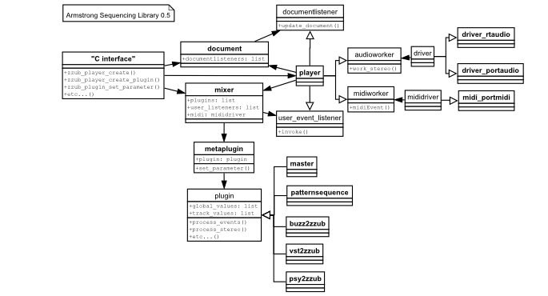

Armstrong is a plugin-based, platform independent sequencing library for Windows, OSX and Linux, using C/C++ or Python.
There is some documentation on the C API, which is the only way to use Armstrong in your own applications. This document aims to explain the workings of the internal C++ classes that make up Armstrong.
Armstrong is split into several components that talk to each other:

Figure: Everybody loves diagrams: The most important classes and their relation to each other. .dia source
| src/armstrong | shared library | C interface implementation. .BMX import, waveform import. Includes all the static libraries below. |
| src/storage | static library | SQLite storage, undo/redo |
| src/mixing | static library | Lock free DSP graph mixer |
| src/player | static library | Audio drivers, plugin enumeration, maintains mixer state from storage |
| src/plugins/core | static library | Core plugins: Master, pattern playing, recording, input/output etc |
| src/plugins/buzz2zzub | static library | Plugin wrapper for Jeskola Buzz plugins |
| src/plugins/lunar | static library | Plugin wrapper for Lunar plugins |
| src/plugins/psy2zzub | static library | Plugin wrapper for Psycle plugins |
| src/plugins/lad2zzub | static library | Plugin wrapper for LADSPA plugins |
| src/plugins/vst2zzub | static library | Plugin wrapper for VST plugins |
| src/plugins/hw2zzub | static library | Plugin wrapper for external MIDI devices |
| src/plugins/midi | static library | Various MIDI plugins; tracker, CC, time, etc |
| src/plugins/modplug | static library | Native tracker based on OpenMPT/Modplug's audio engine |
| src/plugins/stream | static library | Streaming plugins, WAV/MP3/AIFF/FLAC/etc |
| src/modfile | static library | A helper library for loading .MOD/.IT/.XM/.S3M |
| src/mid2armz | utility | Tool for converting .MID to .ARMZ |
| src/sid2armz | utility | Tool for converting .SID to .ARMZ (based on SIDDump by Cadaver) |
There are more than 400 public methods in Armstrongs C interface. For more in depth information, see the C API documentation.
The C API is a flat version of a class hierarchy which provide access to to the internal storage and mixer services through a unified interface. The classes cover rougly these areas:
All Armstrong APIs are prefixed with "zzub_", followed by the class name and the method name.
(TODO: does not work)
#include <zzub/zzub.h>
#include <iostream>
using namespace std;
int main() {
zzub_player_t* player = zzub_player_create();
zzub_audiodriver_t* driver = zzub_audiodriver_create();
zzub_audiodriver_create_device(player, -1, -1);
zzub_player_initialize(player);
zzub_audiodriver_enable(driver, 1);
zzub_player_load_armz(player, "test.armz");
zzub_player_history_commit(player, 0, 0, "Loaded song");
zzub_player_set_state(player, zzub_player_state_playing);
cout << "Press ENTER to quit" << endl;
cin.getline();
zzub_player_set_state(player, zzub_player_state_stopped);
zzub_player_destroy(player);
zzub_audiodriver_enable(driver, 0);
zzub_audiodriver_destroy(driver);
return 0;
}
Many public C API methods operate on the storage component, using methods that primarly generate and execute SQL commands. Lets see what happens when we try to rename a plugin. This call flow is similar for most calls that modify the storage database.
When the client wants to undo, it calls zzub_player_undo(), which calls document::undo(). Simplified, this executes the undo SQL query saved in step 3, and then resumes at step 4.
Armstrong uses an SQLite database for storing song state and temporary files for wave data. All operations on a song are ultimately executed as SQL statements on the database. The storage library provides convenience methods and classes for most operations. Parts of the storage library is autogenerated by the documentgen-program.
The basic concept for undo/redo with an SQL database is described on the SQLite wiki.
Armstrong extends the technique in the article with support for multiple INSERT/UPDATE/DELETE per undo step, notification callbacks and the option to temporarily disable undo buffering.
The ability to temporarily disable undo buffering is important when the host wants to create and destroy plugins transparently. For example: during mixdown, a recorder plugin can be created and used to record to disk. Or, the analyzer view can create a recorder plugin for streaming output to the display. Or, for previewing samples from disk or the wavetable, a temporary stream plugin can be used. This kind of "jacking the undo buffer" can lead to a broken undo buffer, and leaves a lot of responsibility on the host developer.
Armstrong saves to a new file format - .armz - which is a zipped archive containing the SQLite database file (song.armdb) and all waveforms (wavelevel_*.raw).
The storage version number is stored in the version field in the song table. Upon loading, the version field is checked, and if the version number is lower than the current, a series of upgrade scripts are executed. The upgrade scripts are kept as an array of hard coded SQL statements in document.cpp, and is maintained as the .armz database schema changes over time. This approach has limitations, but has worked out nicely so far.
Armstrong adds several helper-functions to the embedded SQLite engine for use in its internal SQL-queries.
| Function name | Description |
|---|---|
| noteutil_buzz_to_midi_note | Converts a Buzz note to a linear MIDI note (because notes are stored as Buzz notes) |
| noteutil_midi_to_buzz_note | Converts a MIDI note to a Buzz note |
| undoredo_enabled_callback | Returns 1 if undo is enabled |
| wavelevel_insert_samples | Intended for internal use only. Raw sample data helper |
| wavelevel_replace_samples | Intended for internal use only. Raw sample data helper |
| wavelevel_delete_samples | Intended for internal use only. Raw sample data helper |
| wavelevel_delete_file | Intended for internal use only. Raw sample data helper |
| XXX_notify_callback | Intended for internal use only. Used in INSERT/UPDATE/DELETE-triggers. Invokes document::notify_listeners() with row id and an event id |
CREATE TABLE attribute (id integer primary key, plugin_id integer, attrindex integer, value integer); CREATE TABLE attributeinfo (id integer primary key, plugininfo_id integer, attrindex integer, name varchar(64), minvalue integer, maxvalue integer, defaultvalue integer); CREATE TABLE connection (id integer primary key, from_plugin_id integer, to_plugin_id integer, type integer); CREATE TABLE envelope (id integer primary key, wave_id integer, attack integer, decay integer, sustain integer, release integer, subdivision integer, flags integer, disabled integer); CREATE TABLE envelopepoint (id integer primary key, envelope_id integer, x integer, y integer, flags integer); CREATE TABLE eventconnectionbinding (id integer primary key, connection_id integer, sourceindex integer, targetparamgroup integer, targetparamtrack integer, targetparamcolumn integer); CREATE TABLE midiconnection (id integer primary key, connection_id integer, mididevice varchar(512)); CREATE TABLE midimapping (id integer primary key, plugin_id integer, paramgroup integer, paramtrack integer, paramcolumn integer, midichannel integer, midicontroller integer); CREATE TABLE parameterinfo (id integer primary key, plugininfo_id integer, paramgroup integer, paramtrack integer, paramcolumn integer, name varchar(64), description varchar(128), flags integer, type integer, minvalue integer, maxvalue integer, novalue integer, defaultvalue integer); CREATE TABLE pattern (id integer primary key, song_id integer, name varchar(64), length integer, resolution integer, display_resolution integer, display_verydark_row integer, display_dark_row integer, patternformat_id integer); CREATE TABLE patternevent (id integer primary key, pattern_id integer, time integer, plugin_id integer, paramgroup integer, paramtrack integer, paramcolumn integer, value integer); CREATE TABLE patternformat (id integer primary key, song_id integer, name varchar(64)); CREATE TABLE patternformatcolumn (id integer primary key, patternformat_id integer, plugin_id integer, paramgroup integer, paramtrack integer, paramcolumn integer); CREATE TABLE plugin (id integer primary key, flags integer, song_id integer, name varchar(64), data blob, trackcount integer, x real, y real, streamsource varchar(64), is_muted integer, is_bypassed integer, is_solo integer, is_minimized integer, plugininfo_id integer); CREATE TABLE plugininfo (id integer primary key, song_id integer, uri varchar(64), name varchar(64), short_name varchar(64), author varchar(64), mintracks integer, maxtracks integer); CREATE TABLE pluginparameter (id integer primary key, plugin_id integer, paramgroup integer, paramtrack integer, paramcolumn integer, value integer); CREATE TABLE sequence (id integer primary key, plugin_id integer, pattern_id integer, position integer, width integer); CREATE TABLE song (id integer primary key, version integer, title varchar(64), comment blob, songbegin integer, songend integer, loopbegin integer, loopend integer, loopenabled integer); CREATE TABLE wave (id integer primary key, song_id integer, name varchar(64), filename varchar(64), flags integer, volume real); CREATE TABLE wavelevel (id integer primary key, wave_id integer, basenote integer, samplerate integer, samplecount integer, beginloop integer, endloop integer, format integer, filename varchar(64));
During mixing, Armstrong distributes the work load across a user-defined number of threads, executed by the operating system on any available CPUs. The number of worker threads must be one or more. When a single worker thread is specified, the mixer runs in "single-thread" mode, falling back to mixing on the audio thread.
Plugins in the graph are considered tasks, where connections define the dependencies. The dependencies are counted, and stored with each task.
The distributed mixer adds tasks on a lock free queue which is polled by the worker threads. Only tasks with a dependency count of zero are added to the queue. When a task is done processing, it decreases the dependency counter of all of its dependent tasks, allowing the mixer to schedule new tasks. The task counter and dependency counts are stored as atomic<int>s, ensuring lock free operation throughout the process.
During processing, Armstrong uses a non-recursive loop to traverse the plugins. Every time the graph changes (a plugin or connection was inserted or deleted), the process order is updated. The following steps determine the final processing order:
The mixer uses five ringbuffers for message passing between the threads.
The following types of messages originate in the audio thread, and are forwarded to the user thread via mixer::user_event_queue:
User messages are polled by calling mixer::process_user_event_queue(). The equivalent C method is zzub_player_handle_events().
The following types of events originate in the user thread, and are passed to the audio thread as fast as possible via mixer::audio_event_queue:
Delayed events are sent upon calling mixer::barrier(). A barrier indicates all the latest changes should be to updated to the running graph. The following events originate in the user thread, and are passed to the audio thread via mixer::commit_event_queue:
Encoder plugins could generate user events, usually for passing audio and slices to the wavetable.
For passing audio to encoders.
The mixer knows little of tempo or ticks, and instead provides a mechanism where plugins decide when to process plugin events.
There are two modes for which a plugin can intercept processing, which is specified through a plugin flag:
| zzub_plugin_flag_is_sequence | Effectively marks the plugin as a time source, which maintains its own tempo by associating with and using one or more pattern players. |
| zzub_plugin_flag_has_interval | Used by plugins that want to intercept the processing at fixed intervals. The engine calls plugin::process_sequence() to determine the number of samples to process before calling plugin::process_sequence() again. |
The player implements listener-interfaces for both the mixer and the storage and routes events internally.
The Armstrong API is described in a spesial interface description language called zidl (Zzub IDL). The zidl-tool supports generating language bindings for Python. It can also generate a C header file, a .def file for linking on Windows and HTML documentation.
The Zidl tool is currently undergoing a rewrite to accomodate for future requirements in a more satisfying manner.